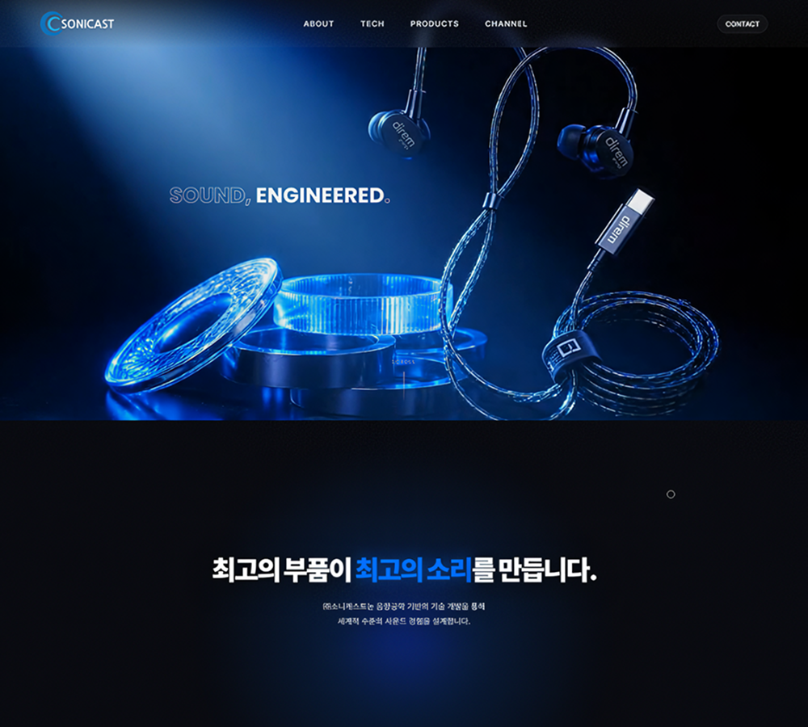
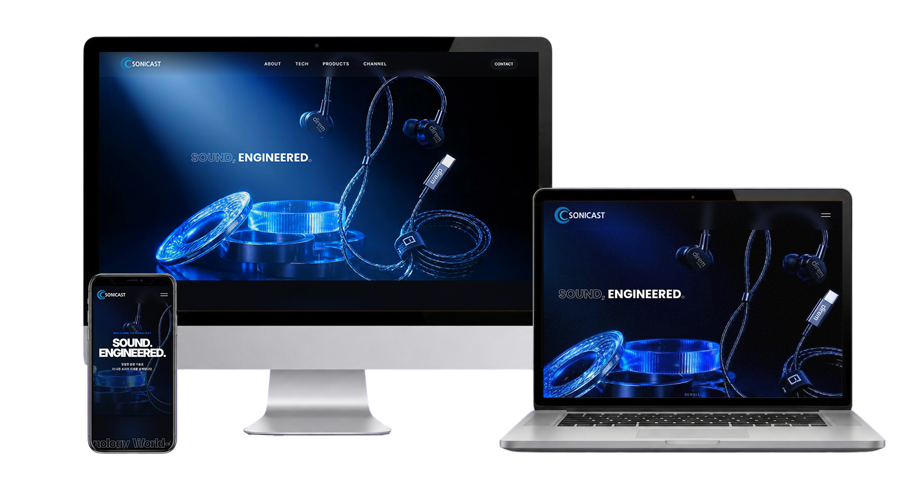
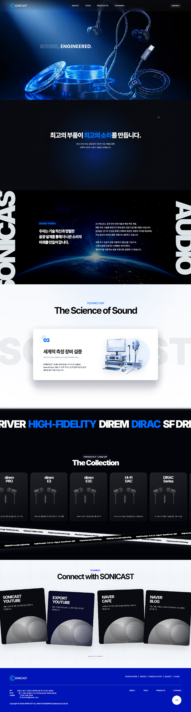

PRODUCT
FOCUS
이어폰 비주얼을 중심으로 제품의 구조와 특징을 강조
PREMIUM DESSERT BRAND REDESIGN
한스케익의 브랜드 감성과 제품 탐색 흐름을 동시에 정돈한 반응형 웹사이트 UX/UI 리디자인 프로젝트입니다.
EXPLORE CASE↘
정교한 음향 기술과 제품의 구조를 가까이 보여주고, 소니캐스트만의 사운드 철학을 경험하도록 구성했습니다.
기존 사이트의 제품과 기술 정보를 분석하고, 원천기술과 연구개발, 측정 장비가 단계적으로 이어지도록 콘텐츠 체계를 재정비했습니다. 사용자가 제품 성능의 근거와 브랜드의 전문성을 쉽게 이해할 수 있도록 정보의 우선순위를 조정했습니다..
블랙과 딥블루를 중심으로 이어폰의 정교한 구조와 사운드의 깊이를 표현했습니다. 영상과 3D 오브제, 스크롤 연출을 활용해 기술 중심 브랜드의 몰입감 있고 선명한 인상을 완성했습니다.
이어폰 비주얼을 중심으로 제품의 구조와 특징을 강조
원천기술과 연구 장비로 음향 성능의 근거를 제시
영상과 스크롤 연출로 사운드의 몰입감을 구현
국내 오디오 브랜드의 웹사이트를 비교해 제품 분류, 기술 정보와 브랜드 표현 방식을 분석했습니다. 이를 바탕으로 소니캐스트의 음향 기술과 제품 경쟁력이 선명하게 드러나는 방향을 설정했습니다.
이어폰·게이밍·무선 제품 구분이 명확함
제품별 특징과 용도를 빠르게 확인 가능
구매 페이지로 바로 연결되는 구조
제품과 세부 카테고리가 다소 많음
구매 과정에서 외부 스토어로 이동함
브랜드 기술력을 한눈에 파악하기 어려움
제품과 세부 카테고리가 다소 많음
구매 과정에서 외부 스토어로 이동함
브랜드 기술력을 한눈에 파악하기 어려움
제품 범위가 넓어 메뉴 단계가 많음
이어폰 정보의 비중이 상대적으로 낮음
핵심 사양 확인에 상세 탐색이 필요함
제품과 핵심 특징을 빠르게 파악하는 구성
R&D와 측정 장비로 음향 성능의 근거 제시
영상과 모션을 통해 사운드의 깊이를 표현
제품 사양과 설명이 나열되어 제품별 특징이 빠르게 드러나지 않음
이어폰 비주얼과 핵심 기능을 결합해 제품의 차별점을 선명하게 제시
원천기술과 연구 역량에 관한 정보가 여러 영역에 흩어져 있음
R&D와 측정 장비를 하나의 흐름으로 묶어 음향 성능의 기술적 근거를 강조
정적인 화면 위주로 구성되어 사운드 브랜드의 역동성이 부족함
영상과 스크롤 인터랙션을 활용해 소리의 깊이와 움직임을 시각화
블랙과 딥블루를 중심으로 이어폰의 정교한 구조와 음향 기술의 전문성을 표현했습니다. 제품 이미지와 그래픽 요소를 겹쳐 입체감을 더하고, 영상과 스크롤 모션을 활용해 사운드의 깊이와 몰입감을 시각적으로 전달했습니다.
블랙과 딥블루로 몰입감 있는 무드 구성
제품 구조와 기술력을 정교한 비주얼로 표현
레이어와 입체 이미지로 사운드의 깊이 강조
영상과 스크롤 연출로 역동적인 경험 구현
공통 무채색 토큰은 그대로 두고 프로젝트별로--accent,--accent-soft,--accent-dark만 교체합니다.
ABCDEFGHIJKLMNOPQRSTUVWXYZ
0123456789
가나다라마바사아자차카타파하
데스크톱의 비대칭 레이아웃은 태블릿과 모바일에서 콘텐츠 우선순위에 맞춰 단순한 세로 구조로 변환됩니다.

